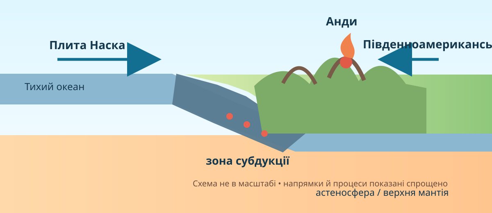

1Почніть із суперечки
Гіпотеза А
Анди високі просто тому, що лежать біля океану.
Гіпотеза Б
Положення Анд і багатьох рудних родовищ пов’язане з активною межею літосферних плит.
2Просторовий доказ: де саме лежать великі форми рельєфу?
Карта: © OpenStreetMap contributors. Наближайте західне узбережжя, центральні низовини та східні плоскогір’я.
Захід
Центр і північ
Схід
3Перевірка висот: реальні радарні дані NASA SRTM

Зображення: NASA/JPL/NIMA, Shuttle Radar Topography Mission. Офіційна сторінка NASA.
Шукайте контраст
Порівняйте вузьку смугу високих Анд із величезною низькою Амазонською низовиною. Чому така асиметрія не схожа на випадковий розподіл висот?
Контрприклад
Схід материка теж має підняття — Бразильське й Гвіанське плоскогір’я. Чому це не спростовує зв’язок Анд із сучасною активною межею плит?
4Процесуальний доказ: що відбувається під західним краєм материка?

USGS: Seismotectonics of South America • USGS Earthquake Map — перевірте сучасні осередки землетрусів.
5Ресурсний доказ: чому мідні родовища утворюють пояс?
USGS називає Анди одним із головних світових районів порфірових мідних родовищ. Просторовий збіг родовищ із магматичними поясами — не випадковість: флюїди, пов’язані з магматизмом, можуть концентрувати метали в земній корі.
Мідь
Типова для багатьох андських порфірових систем; великі райони видобутку — Чилі й Перу.
Залізо, марганець, боксити
Не всі ресурси пов’язані з молодим вулканізмом. Частина тяжіє до давніх платформних структур і кори вивітрювання.
Нафта й газ
Паливні ресурси пов’язані переважно з осадовими басейнами, а не з магматичним ядром Анд.
Завдання «не все в горах»
Спростуйте твердження: «Якщо Південна Америка багата на корисні копалини, то всі вони утворилися через субдукцію плити Наска».
USGS Data Release: Porphyry copper deposits and prospects in the Andes.
6Зберіть причинний ланцюг
Натискайте на елементи в логічному порядку. Правильний ланцюг має пояснити не назви, а механізм.
7Коротке відеоспостереження
8Проміжний висновок — і тільки потім теорія
9Теорія після дослідження
1. Захід — молода складчаста область
Анди сформовані на активній західній окраїні Південноамериканської плити. Субдукція плити Наска спричиняє стискання, потовщення й підняття кори, землетруси та магматизм. Саме тому молоді високі гори витягнуті вздовж Тихого океану.
2. Схід — давня платформа
Бразильське та Гвіанське плоскогір’я пов’язані з давніми ділянками континентальної кори. Між ними й Андами лежать великі прогини та низовини — Амазонська, Орінокська, Ла-Платська.
3. Ресурси мають різне походження
Мідні та інші гідротермальні рудні системи часто тяжіють до андських магматичних поясів. Натомість залізні й марганцеві руди, боксити та інші ресурси можуть бути пов’язані з давніми щитами й тривалим вивітрюванням, а нафта й газ — з осадовими басейнами.
4. Формула уроку
Тектонічний режим задає великі структури → вони визначають основний каркас рельєфу → геологічна історія створює закономірності розміщення родовищ. Але сучасний рельєф додатково переробляють вода, льодовики, вітер і гравітаційні процеси.
10CER: доведіть закономірність
Питання: «Чи можна за тектонічною картою передбачити, де в Південній Америці найімовірніше шукати молоді гори й частину рудних поясів?»
твердження є, але доказів мало
є 2 докази, механізм частковий
3 докази + причинний зв’язок
є контрприклад і межі узагальнення
11Домашнє завдання
Обов’язково
Опрацюйте §33. Створіть мінісхему «структура → форма рельєфу → 1–2 типові ресурси» для трьох зон: Анди, Бразильське плоскогір’я, одна велика низовина.
Електронний підручник / Всеукраїнська школа онлайн →Дослідницький бонус
На USGS Earthquake Map знайдіть 5 землетрусів уздовж західного краю Південної Америки. Запишіть координати, глибину й поясніть, чому осередки мають різну глибину.
USGS Earthquake Map →12Тест — 10 балів
Джерела даних
NASA Earth Observatory — Topography of South America / SRTM
USGS — Seismotectonics of South America
USGS — Porphyry copper deposits and prospects in the Andes
OpenStreetMap
Copernicus Browser • NASA Worldview